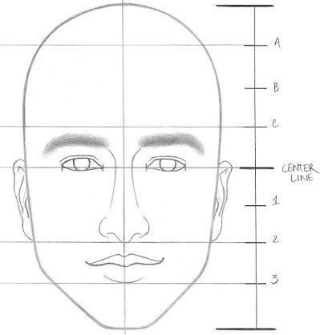

Cómo dibujar una cara realista
Paso 1: Comienza con un círculo

Dibuja un círculo grande y dibuja una línea horizontal debajo para la barbilla. Luego, dibuja la mandíbula. Dibuja una línea vertical por el centro de la cara y asegúrate de que ambos lados sean simétricos.
Paso 2: Dibuja las guías faciales

Hay dos maneras de realizar este paso: con regla o sin regla. Recomiendo encarecidamente usar el método de la regla para las primeras dos caras que dibujes. ¿Por qué? Porque si lo haces sin regla, puedes alterar mucho las proporciones, especialmente si te cuesta localizar el centro de un objeto con la vista. El método sin regla requiere dividir varias secciones de la cara por la mitad y luego por la mitad otra vez.
Método de la regla:
Dibuja una regla junto a tu dibujo, que tenga la misma altura. La regla debe estar marcada de modo que haya 8 espacios iguales. Empieza siempre por la línea central. Dibuja líneas tenues a través de la cara en las marcas "CENTER LINE", 2, 3, A y C. A medida que te acostumbres, no necesitarás dibujar la regla en el lateral.
Método sin regla:
Sin regla, dibujo líneas en este orden: LÍNEA CENTRAL, 2, 3, B, A, C (incluyo B porque es más fácil partir primero la sección de la frente por la mitad, sobre todo al dibujar a mano alzada). Este es el método que uso siempre para dibujar cabezas.
Paso 3: Dibuja los ojos en el lugar correcto
En la cara, marca la línea central con cuatro marcas equidistantes. Los ojos se ubicarán aproximadamente sobre esta línea.
Paso 4: Dibuja la nariz proporcionada
Extiende las dos líneas donde se encuentran las esquinas interiores de cada ojo. Estas guías determinarán el ancho de la nariz. Ahora que tenemos un recuadro, es hora de dibujar la nariz.
Comienza con un círculo, colocándolo entre las líneas 1 y 2. Puedes darle a tu personaje masculino una apariencia más estilizada dibujando la nariz con formas muy angulares.
Paso 5: Dibuja las cejas
Extiende el puente de la nariz más allá de los párpados para definir el hueso de la ceja (este paso es opcional). ¡Estas líneas deben ser muy suaves! Con un lápiz 4B, dibuja las cejas a lo largo del hueso de la ceja. ¡Un rasgo facial que puede acentuar la masculinidad son las cejas gruesas y pobladas!
Paso 6: Usa una forma de triángulo para dibujar loo labios
Dibuja una línea vertical por el centro de cada ojo. Esto marcará el límite exterior de los labios.
Si ya lo leíste, coloca el triángulo en el pequeño recuadro debajo de la nariz para empezar. Si dibujaste la nariz muy por encima de la línea 2, extiende el triángulo hasta que la punta toque la nariz .
Paso 7: Dibuja las orejas
Las orejas se encuentran entre las líneas 2 y center. Dibuja una forma de "C" para la oreja izquierda y una forma de "C" invertida para la oreja derecha. Añade detalles como el trago, el antitrago y el lóbulo de la oreja.
Paso 8: Dibuja el cabello
Dibuja la línea superior del cabello en algún punto entre las líneas A y B. El tamaño de la frente lo decides tú. Para dibujar una línea de cabello en retroceso, ve por encima de la línea A. Al dibujar el rostro de un hombre, incorpora el cabello de los lados de la cabeza para crear una línea de cabello sólida y visible.